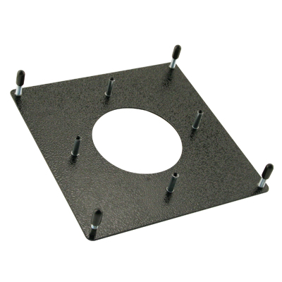

3" Trackball Mounting Plate Kit, Painted Black with Spacer
Suzo-Happ Part # 55-1101-00
Description:
- Metal Mounting plate to adapt trackball to wood or metal control panels.
- Available for 1-1/2", 2-1/4", 3" and 3" High Ball Trackballs.
- Durable Black River powder coated finish or Clear zinc finish available.
- Innovative method of securing trackball to plate to allow for now external hardware along top surface of mounting plate.
- Includes all necessary washers and nuts to assemble.
- Trackball sold separately
